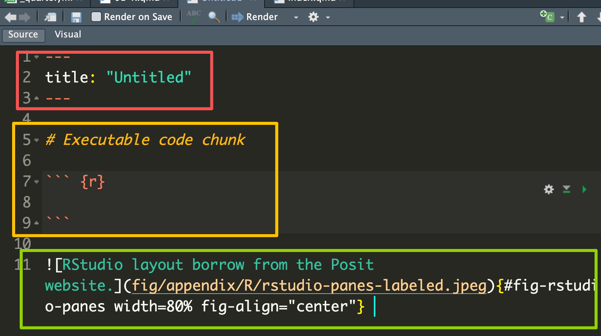

```{r}
x <- rnorm(100)
mean(x)
```[1] -0.01310165Learning objectives
By the end of this chapter, you should be able to:
- Describe how R reads, evaluates, and prints an expression.
- Distinguish an object from the name bound to that object.
- Identify the major data types and data structures in R.
- Predict how vectorization, coercion, recycling, and missing values affect a computation.
- Create, inspect, index, and modify vectors, matrices, arrays, lists, and data frames.
- Write and use simple R functions.
- Choose appropriately among vectorization, loops, and the
apply()family.- Use the tidyverse pipe and core
dplyrverbs to express a data-analysis pipeline.- Write computations that are reproducible, readable, and numerically responsible.
Modern statistical analyses routinely involve hundreds, thousands, or millions of observations. The calculations are too numerous, and often too complex, to perform reliably by hand. We therefore need software that can manage data, implement statistical methods, automate repeated computations, and document the complete analysis.
R is both a high-level programming language and an environment for statistical computing and graphics. It is especially useful for statistics because it is:
R is not a menu-driven statistics program. Learning R means learning to express an analysis as a sequence of precise and reproducible computations.
R performs the computation. RStudio is an integrated development environment that helps us write and run code. Quarto combines text, code, results, figures, equations, and references into reproducible HTML, PDF, Word, or presentation output.
There are different integrated development environment to use R, some of them are Rstudio, VS Code and Positron.
Rstudio
RStudio is an integrated development environment (IDE) designed specifically for working with the R programming language. It provides a user-friendly interface that includes a source editor, console, environment pane, and tools for plotting, debugging, version control, and package management. RStudio supports both R and Python and is widely used for data analysis, statistical modeling, and reproducible research. It also integrates seamlessly with tools like R Markdown, Shiny, and Quarto, making it popular among data scientists, statisticians, and educators.
Visual Studio Code (VS Code)
VS Code is a versatile code editor that supports multiple programming languages, including R. With the R extension for VS Code, users can write and execute R code, access R’s console, and utilize features like syntax highlighting, code completion, and debugging. While not as specialized as RStudio for R development, VS Code offers a lightweight alternative with extensive customization options and support for various programming tasks.
Positron
Positron IDE is the next-generation integrated development environment developed by Posit, the company behind RStudio. Designed to be a modern, extensible, and language-agnostic IDE, Positron builds on the strengths of RStudio while supporting a broader range of languages and workflows, including R, Python, and Quarto.
RStudio is an integrated development environment (IDE) for R, Python, and reproducible publishing. Its default layout contains four panes:
| Pane | Main purpose |
|---|---|
| Source | Write and edit scripts and Quarto documents. |
| Console | Send expressions directly to R and view immediate results. |
| Environment/History | Inspect objects and review previous commands. |
| Files/Plots/Packages/Help/Viewer | Navigate files, inspect graphics, manage packages, read documentation, and preview output. |
Use the console for short experiments. Any computation that matters should be placed in an R script or Quarto document so that it can be reproduced.

An R script is a plain-text file with the extension .R. It contains R expressions that can be executed one line, one selection, or one file at a time.
A Quarto document has the extension .qmd. It combines:

In Figure 1.3, the red box is the yaml, the yellow box is the executable code chunk and the green box is a figure.
For example, an executable R chunk is written as
```{r}
x <- rnorm(100)
mean(x)
```[1] -0.01310165Rendering the document executes the enabled chunks in order and places their results into the final output.
Create one RStudio Project for the course or for each substantial analysis. Use project-relative paths such as data/survey.csv rather than hard-coded paths tied to one computer.
A simple project might contain:
stat8670-project/
├── data/ # original and processed data
├── R/ # reusable functions
├── figures/ # saved figures
├── notes/ # Quarto lecture or analysis files
└── stat8670-project.RprojAvoid using setwd() inside a reproducible document. When a project is opened, its root provides a stable reference point for relative paths.
At the console, R follows a read, evaluate, print loop (REPL):
2 + 3 * 4[1] 14R respects operator precedence, so multiplication is performed before addition.
(2 + 3) * 4[1] 20Assignment usually returns its value invisibly:
x <- 2 + 3 * 4
x[1] 14Most R code can be understood as functions operating on objects. Even operators such as + are functions.
`+`(2, 3)[1] 5Two fundamental kinds of objects that we will work with are:
Data objects include numbers, vectors, matrices, arrays, lists, data frames, and fitted models.
A function is a set of instructions that receives input, performs a computation, and returns an output. Functions can be built into R, provided by a package, or written by the user.
mean(c(1, 2, 3, 4))[1] 2.5Here, c(1, 2, 3, 4) is a data object and mean() is a function.
R computes with objects. A name is a symbol bound to an object.
sample_size <- 100
another_name <- sample_size
sample_size[1] 100another_name[1] 100The assignment operator <- creates or changes a binding.
Names are case-sensitive:
n <- 10
N <- 25
c(n = n, N = N) n N
10 25 A useful naming convention is to separate words using _:
sample_mean <- 10
number_students <- 30Use ls() to list names in the current environment and rm() to remove a binding.
temporary_result <- 42
"temporary_result" %in% ls()[1] TRUErm(temporary_result)
"temporary_result" %in% ls()[1] FALSEThe fundamental data structure in R is the vector. An atomic vector contains elements of one common type.
Common atomic types include:
| Type | Example | Typical use |
|---|---|---|
| logical | TRUE, FALSE |
conditions and indicators |
| integer | 2L |
counts and indices |
| double | 2, 3.14 |
numerical computation |
| character | "R" |
text and labels |
| complex | 1 + 2i |
complex arithmetic |
| raw | charToRaw("R") |
bytes |
logical_vector <- c(TRUE, FALSE, TRUE)
integer_vector <- c(1L, 2L, 3L)
double_vector <- c(1, 2, 3)
character_vector <- c("one", "two", "three")
typeof(logical_vector)[1] "logical"typeof(integer_vector)[1] "integer"typeof(double_vector)[1] "double"typeof(character_vector)[1] "character"Data types can be explicitly converted, but conversion may result in information loss.
x <- pi
x[1] 3.141593x_int <- as.integer(x)
x_int[1] 3Here, converting \(\pi\) to an integer removes its decimal component.
Common conversion functions include:
as.integer()as.numeric()as.character()as.logical()as.Date()as.factor()as.list()as.matrix()as.data.frame()as.vector()as.complex()Always inspect the result after converting an object from one type to another.
A unary operator operates on one object:
-x
!xA binary operator operates on two objects:
x + y
x - y
x * y
x / yComparison operators
Comparison operators return logical values:
x == y
x != y
x < y
x > y
x <= y
x >= yLogical operators
Logical operators combine logical values:
x & y
x | y
!xThe operators & and | operate element by element.
x <- c(TRUE, FALSE, FALSE)
y <- c(TRUE, TRUE, FALSE)
x | y[1] TRUE TRUE FALSEx & y[1] TRUE FALSE FALSEBy contrast, && and || are intended for a single logical condition and are commonly used inside if statements.
Many R functions and operators act on entire vectors.
x <- c(1, 2, 3, 4)
x^2[1] 1 4 9 16sqrt(x)[1] 1.000000 1.414214 1.732051 2.000000sum(x)[1] 10mean(x)[1] 2.5Vectorized code often expresses statistical calculations more directly than element-by-element code.
Arithmetic between vectors is usually element-wise.
x <- c(10, 20, 30)
y <- c(1, 2, 3)
x + y[1] 11 22 33If one vector is shorter, R may recycle its values.
c(10, 20, 30, 40) + c(1, 2)[1] 11 22 31 42When the shorter length does not divide the longer length exactly, R produces a warning.
c(10, 20, 30, 40) + c(1, 2, 3)Warning in c(10, 20, 30, 40) + c(1, 2, 3): longer object length is not a
multiple of shorter object length[1] 11 22 33 41An atomic vector must have one type. Combining different types may cause R to convert values to a common type.
mixed_numeric <- c(TRUE, 2L, 3.5)
mixed_character <- c(TRUE, 2L, 3.5, "four")
mixed_numeric[1] 1.0 2.0 3.5typeof(mixed_numeric)[1] "double"mixed_character[1] "TRUE" "2" "3.5" "four"typeof(mixed_character)[1] "character"A simplified coercion hierarchy is:
logical → integer → double → complex → characterInspect unfamiliar objects using
typeof()
class()
length()
str()R uses NA to represent a missing value.
day <- c("Monday", "Tuesday", "Wednesday", "Thursday", "Friday")
weather <- c("Raining", "Sunny", NA, "Windy", "Snowing")
weather_data <- data.frame(day, weather)
weather_data day weather
1 Monday Raining
2 Tuesday Sunny
3 Wednesday <NA>
4 Thursday Windy
5 Friday SnowingMissing values usually propagate through calculations:
scores <- c(88, NA, 91, 84)
mean(scores)[1] NAmean(scores, na.rm = TRUE)[1] 87.66667is.na(scores)[1] FALSE TRUE FALSE FALSEDo not use
x == NAto detect missing values. Use
is.na(x)instead.
Other special numerical values include
c(1 / 0, -1 / 0, 0 / 0)[1] Inf -Inf NaNwhich produce Inf, -Inf, and NaN.
Indexing allows us to access or modify parts of an object.
Unlike languages such as Python and C++, R uses 1-based indexing. The first element is indexed by 1, not 0.
For a vector:
x <- c(first = 10, second = 20, third = 30, fourth = 40)
x[1]first
10 x[c(1, 3)]first third
10 30 x[-2] first third fourth
10 30 40 x[x >= 30] third fourth
30 40 x[c("second", "fourth")]second fourth
20 40 Positive integers select positions, negative integers exclude positions, logical values filter positions, and character values select named elements.
Prefer seq_along(x) to 1:length(x) when iterating over the positions of an object.
empty <- numeric(0)
1:length(empty)[1] 1 0seq_along(empty)integer(0)Names can be attached to vector elements:
temp <- c(20, 30, 27, 31, 45)
names(temp) <- c("Mon", "Tues", "Wed", "Thurs", "Fri")
temp Mon Tues Wed Thurs Fri
20 30 27 31 45 temp["Wed"]Wed
27 A vector does not have rows, so this is inappropriate:
rownames(temp) <- "Day1"A matrix can have row and column names:
temp_mat <- matrix(c(20, 30, 27, 31, 45),
nrow = 1,
ncol = 5)
colnames(temp_mat) <- c("Mon", "Tues", "Wed", "Thurs", "Fri")
rownames(temp_mat) <- "Day1"
temp_mat Mon Tues Wed Thurs Fri
Day1 20 30 27 31 45An array is a multidimensional data structure.
array_1d <- array(1:10, dim = 10)
array_1d [1] 1 2 3 4 5 6 7 8 9 10array_2d <- array(1:12, dim = c(4, 3))
array_2d [,1] [,2] [,3]
[1,] 1 5 9
[2,] 2 6 10
[3,] 3 7 11
[4,] 4 8 12array_3d <- array(1:24, dim = c(4, 3, 2))
array_3d, , 1
[,1] [,2] [,3]
[1,] 1 5 9
[2,] 2 6 10
[3,] 3 7 11
[4,] 4 8 12
, , 2
[,1] [,2] [,3]
[1,] 13 17 21
[2,] 14 18 22
[3,] 15 19 23
[4,] 16 20 24A matrix is a two-dimensional array:
my_matrix <- matrix(1:12, nrow = 4, ncol = 3)
my_matrix [,1] [,2] [,3]
[1,] 1 5 9
[2,] 2 6 10
[3,] 3 7 11
[4,] 4 8 12is.matrix(array_2d)[1] TRUEis.matrix(my_matrix)[1] TRUEis.array(array_2d)[1] TRUEis.array(my_matrix)[1] TRUEA matrix is an atomic vector with a dim attribute, so all entries must share one common type.
A <- matrix(1:6, nrow = 2, ncol = 3)
attributes(A)$dim
[1] 2 3A[2, 3][1] 6Matrix multiplication uses %*%:
B <- matrix(c(1, 0, 0, 1, 1, 1), nrow = 3)
A %*% B [,1] [,2]
[1,] 1 9
[2,] 2 12while * performs element-wise multiplication.
A list can contain objects of different types and lengths.
fit_summary <- list(
method = "least squares",
coefficients = c(intercept = 1.2, slope = 0.8),
converged = TRUE
)
str(fit_summary)List of 3
$ method : chr "least squares"
$ coefficients: Named num [1:2] 1.2 0.8
..- attr(*, "names")= chr [1:2] "intercept" "slope"
$ converged : logi TRUENamed list elements naturally form key-value pairs.
key1 <- "Tues"
value1 <- 32
key2 <- "Wed"
value2 <- 28
list_temp <- list()
list_temp[[key1]] <- value1
list_temp[[key2]] <- value2
list_temp$Tues
[1] 32
$Wed
[1] 28Values can then be obtained from their keys:
list_temp[["Tues"]][1] 32list_temp$Tues[1] 32For lists, note the important distinction:
fit_summary["coefficients"]$coefficients
intercept slope
1.2 0.8 fit_summary[["coefficients"]]intercept slope
1.2 0.8 [ returns a sublist, whereas [[ extracts the element itself.
A factor represents categorical data using integer codes and a set of levels.
group <- factor(c("control", "treatment", "control"))
group[1] control treatment control
Levels: control treatmentunclass(group)[1] 1 2 1
attr(,"levels")
[1] "control" "treatment"levels(group)[1] "control" "treatment"The order of factor levels matters in statistical models, so define it deliberately when necessary.
A data frame is a two-dimensional rectangular data structure.
Conceptually, a data frame is a named list of equal-length vectors:
students <- data.frame(
id = 1:6,
name = c("Alice", "Bob", "Chen", "Divya", "Elena", "Farah"),
program = c("MS", "PhD", "MS", "PhD", "MS", "PhD"),
score = c(90, 85, NA, 94, 88, 91),
completed = c(TRUE, TRUE, FALSE, TRUE, TRUE, TRUE)
)
students id name program score completed
1 1 Alice MS 90 TRUE
2 2 Bob PhD 85 TRUE
3 3 Chen MS NA FALSE
4 4 Divya PhD 94 TRUE
5 5 Elena MS 88 TRUE
6 6 Farah PhD 91 TRUEAnother familiar built-in data frame is:
iris <- datasets::iris
head(iris) Sepal.Length Sepal.Width Petal.Length Petal.Width Species
1 5.1 3.5 1.4 0.2 setosa
2 4.9 3.0 1.4 0.2 setosa
3 4.7 3.2 1.3 0.2 setosa
4 4.6 3.1 1.5 0.2 setosa
5 5.0 3.6 1.4 0.2 setosa
6 5.4 3.9 1.7 0.4 setosaAlways inspect newly imported data before analyzing them.
class(students)[1] "data.frame"dim(students)[1] 6 5nrow(students)[1] 6ncol(students)[1] 5names(students)[1] "id" "name" "program" "score" "completed"str(students)'data.frame': 6 obs. of 5 variables:
$ id : int 1 2 3 4 5 6
$ name : chr "Alice" "Bob" "Chen" "Divya" ...
$ program : chr "MS" "PhD" "MS" "PhD" ...
$ score : num 90 85 NA 94 88 91
$ completed: logi TRUE TRUE FALSE TRUE TRUE TRUEsummary(students) id name program score completed
Min. :1.00 Length :6 Length :6 Min. :85.0 Mode :logical
1st Qu.:2.25 N.unique :6 N.unique :2 1st Qu.:88.0 FALSE:1
Median :3.50 N.blank :0 N.blank :0 Median :90.0 TRUE :5
Mean :3.50 Min.nchar:3 Min.nchar:2 Mean :89.6
3rd Qu.:4.75 Max.nchar:5 Max.nchar:3 3rd Qu.:91.0
Max. :6.00 Max. :94.0
NAs :1 head(students, 3) id name program score completed
1 1 Alice MS 90 TRUE
2 2 Bob PhD 85 TRUE
3 3 Chen MS NA FALSEstr() is especially useful because it gives a compact summary of the object’s structure and types.
Use
data[rows, columns]for two-dimensional indexing:
students[1, ] id name program score completed
1 1 Alice MS 90 TRUEstudents[, c("name", "score")] name score
1 Alice 90
2 Bob 85
3 Chen NA
4 Divya 94
5 Elena 88
6 Farah 91students[students$program == "PhD", ] id name program score completed
2 2 Bob PhD 85 TRUE
4 4 Divya PhD 94 TRUE
6 6 Farah PhD 91 TRUEstudents[1:3, c("name", "score")] name score
1 Alice 90
2 Bob 85
3 Chen NAstudents[2, "score"][1] 85Three commonly used ways to extract a column are:
students["score"] score
1 90
2 85
3 NA
4 94
5 88
6 91students[["score"]][1] 90 85 NA 94 88 91students$score[1] 90 85 NA 94 88 91The first returns a one-column data frame. The latter two return the underlying vector.
students$passed <- students$score >= 70
students$centered_score <-
students$score - mean(students$score, na.rm = TRUE)
students id name program score completed passed centered_score
1 1 Alice MS 90 TRUE TRUE 0.4
2 2 Bob PhD 85 TRUE TRUE -4.6
3 3 Chen MS NA FALSE NA NA
4 4 Divya PhD 94 TRUE TRUE 4.4
5 5 Elena MS 88 TRUE TRUE -1.6
6 6 Farah PhD 91 TRUE TRUE 1.4Missingness propagates naturally. If a score is unknown, whether the student passed is also unknown.
survey <- read.csv(
"data/survey.csv",
na.strings = c("", "NA", ".")
)
measurements <- read.table(
"data/measurements.txt",
header = TRUE,
sep = "\t"
)After importing, check:
dim(survey)
names(survey)
str(survey)
head(survey)
colSums(is.na(survey))Import settings such as delimiters, missing-value codes, decimal marks, encodings, and inferred variable types can change the data that R sees and therefore affect the final analysis.
apply() first converts a data frame to a matrix. A mixed-type data frame can therefore be converted entirely to character values. Use lapply(), vapply(), or dplyr::across() for column-wise operations when types differ.
A function packages a computation so that it can be reused.
standardize <- function(x, remove_na = FALSE) {
center <- mean(x, na.rm = remove_na)
spread <- sd(x, na.rm = remove_na)
(x - center) / spread
}
standardize(c(2, 4, 6, 8))[1] -1.1618950 -0.3872983 0.3872983 1.1618950A function has three main components:
formals(standardize)$x
$remove_na
[1] FALSEbody(standardize){
center <- mean(x, na.rm = remove_na)
spread <- sd(x, na.rm = remove_na)
(x - center)/spread
}environment(standardize)<environment: R_GlobalEnv>When a function is called, R creates a temporary environment, matches the arguments, evaluates the body, and returns the value of the final expression unless return() is called earlier.
Arguments can be matched by name or position.
round(x = 3.14159, digits = 3)[1] 3.142round(3.14159, 3)[1] 3.142Named arguments are often clearer in code intended to be read by others.
R evaluates function arguments only when they are needed.
choose_one <- function(x, y) {
x
}
choose_one(
10,
stop("This argument is never evaluated")
)[1] 10This behavior is called lazy evaluation.
An environment stores name-object bindings and has a parent environment.
R uses lexical scoping: functions look for nonlocal names in the environment where they were defined.
make_power <- function(power) {
function(x) {
x^power
}
}
square <- make_power(2)
cube <- make_power(3)
square(5)[1] 25cube(5)[1] 125A function together with its defining environment is called a closure.
Local assignment affects the current function environment:
x <- 100
change_locally <- function() {
x <- 5
x
}
change_locally()[1] 5x[1] 100R behaves as if objects are copied when modified.
x <- c(10, 20, 30)
y <- x
y[1] <- 999
x[1] 10 20 30y[1] 999 20 30Changing y does not change x.
Repeatedly expanding an object can require many allocations:
result <- numeric(0)
for (i in seq_len(100000)) {
result <- c(result, i^2)
}Instead, preallocate the required memory:
n <- 100000
result <- numeric(n)
for (i in seq_len(n)) {
result[i] <- i^2
}
head(result)[1] 1 4 9 16 25 36An iterative computation can usually be expressed in several ways.
x <- c(2, 4, 6, 8)
# Vectorized
x^2[1] 4 16 36 64# Preallocated loop
squares <- numeric(length(x))
for (i in seq_along(x)) {
squares[i] <- x[i]^2
}
squares[1] 4 16 36 64# Apply a function
vapply(
x,
function(value) value^2,
numeric(1)
)[1] 4 16 36 64Use vectorization when an existing vectorized function directly expresses the computation. Use a loop when the calculation has evolving state or complex indexing. Use an apply-family function when the same operation is independently applied to several pieces of an object.
apply() and lapply() still perform iteration internally. They are not automatically faster than a well-written preallocated for loop. Their main advantage is often clarity and conciseness.
apply()apply(X, MARGIN, FUN, ...) applies a function over dimensions of a matrix or array.
MARGIN = 1: rowsMARGIN = 2: columnsX <- matrix(1:12, nrow = 3, byrow = TRUE)
colnames(X) <- c("x1", "x2", "x3", "x4")
X x1 x2 x3 x4
[1,] 1 2 3 4
[2,] 5 6 7 8
[3,] 9 10 11 12apply(X, MARGIN = 1, FUN = mean)[1] 2.5 6.5 10.5apply(X, MARGIN = 2, FUN = sd)x1 x2 x3 x4
4 4 4 4 Additional arguments are passed through ...:
X_missing <- X
X_missing[2, 3] <- NA
apply(X_missing, 2, mean, na.rm = TRUE)x1 x2 x3 x4
5 6 7 8 For common operations, specialized functions are preferable:
rowMeans(X)[1] 2.5 6.5 10.5colMeans(X)x1 x2 x3 x4
5 6 7 8 rowSums(X)[1] 10 26 42colSums(X)x1 x2 x3 x4
15 18 21 24 apply() can be dangerous for data framesmixed_df <- data.frame(
id = c("A", "B", "C"),
x = c(10, 20, 30),
y = c(2, 4, 6)
)
as.matrix(mixed_df) id x y
[1,] "A" "10" "2"
[2,] "B" "20" "4"
[3,] "C" "30" "6"typeof(as.matrix(mixed_df))[1] "character"Because one column is character, the entire matrix becomes character.
A safer approach is:
numeric_columns <- vapply(
mixed_df,
is.numeric,
logical(1)
)
vapply(
mixed_df[numeric_columns],
mean,
numeric(1)
) x y
20 4 lapply()lapply() applies a function to each element and always returns a list.
lapply(students, class)$id
[1] "integer"
$name
[1] "character"
$program
[1] "character"
$score
[1] "numeric"
$completed
[1] "logical"
$passed
[1] "logical"
$centered_score
[1] "numeric"lapply(
students[c("score", "centered_score")],
mean,
na.rm = TRUE
)$score
[1] 89.6
$centered_score
[1] 5.861978e-15sapply() and vapply()sapply() attempts to simplify the output.
sapply(students, class) id name program score completed
"integer" "character" "character" "numeric" "logical"
passed centered_score
"logical" "numeric" vapply() requires the expected output type:
vapply(students, typeof, character(1)) id name program score completed
"integer" "character" "character" "double" "logical"
passed centered_score
"logical" "double" This makes vapply() safer for reusable code.
tapply()tapply() splits a vector into groups and applies a function within each group.
with(
students,
tapply(score, program, mean, na.rm = TRUE)
) MS PhD
89 90 Map() and mapply()These functions apply a function to corresponding elements of multiple inputs.
Map(
function(center, spread) rnorm(3, center, spread),
center = c(0, 10),
spread = c(1, 2)
)[[1]]
[1] 0.2896038 1.4751528 -0.2142565
[[2]]
[1] 13.124713 11.324494 6.852467| Goal | Recommended starting point |
|---|---|
| Element-wise arithmetic | Vectorized function or operator |
| Standard matrix row/column summaries | rowSums(), colSums(), rowMeans(), colMeans() |
| General matrix row/column operation | apply() |
| Operation on list or data-frame columns | lapply() |
| Known scalar output type | vapply() |
| Grouped operation on one vector | tapply() |
| Data-frame columns in tidyverse | dplyr::across() |
| Complex state-dependent computation | Preallocated for loop |
Packages extend R with functions, data, documentation, and statistical methods. The historical package count can be found https://www.datasciencemeta.com/rpackages.
# CRAN
install.packages("packageName")
# Bioconductor
BiocManager::install("packageName")
# GitHub
remotes::install_github("username/repository")Load an installed package:
library(packageName)or call one function explicitly:
packageName::function_name()Useful help tools include:
?mean
help("mean")
example(mean)
args(mean)
methods(mean)The tidyverse is a coordinated collection of R packages for data manipulation, visualization, importing, tidying, and programming.
install.packages("tidyverse")library(tidyverse)Important packages include:
library(dplyr) # data manipulation
library(ggplot2) # data visualization
library(readr) # data import
library(tibble) # tidy data frames
library(tidyr) # data tidying
library(purrr) # functional programmingBase R and tidyverse tools are complementary rather than competing systems.
A tibble is a modern data frame.
students_tbl <- as_tibble(students)
students_tbl# A tibble: 6 × 7
id name program score completed passed centered_score
<int> <chr> <chr> <dbl> <lgl> <lgl> <dbl>
1 1 Alice MS 90 TRUE TRUE 0.400
2 2 Bob PhD 85 TRUE TRUE -4.60
3 3 Chen MS NA FALSE NA NA
4 4 Divya PhD 94 TRUE TRUE 4.40
5 5 Elena MS 88 TRUE TRUE -1.60
6 6 Farah PhD 91 TRUE TRUE 1.40 class(students_tbl)[1] "tbl_df" "tbl" "data.frame"Some important differences are:
| Operation | Base data frame | Tibble |
|---|---|---|
| Printing | May print many rows | Compact preview |
x[, "score"] |
May simplify | Remains a tibble |
| Partial matching | May occur in some contexts | More strict |
| Row names | Supported | Discouraged |
Both are still data frames:
is.data.frame(students_tbl)[1] TRUEThe native R pipe is
|>and the commonly used magrittr/tidyverse pipe is
%>%The pipe passes the result of one operation to the next function.
set.seed(777)
x <- rnorm(5)
# Without pipe
print(round(mean(x), 2))[1] 0.37# Native pipe
x |>
mean() |>
round(2) |>
print()[1] 0.37The pipe makes the sequence of operations explicit.
A useful formatting rule is that |> should have spaces around it and normally appear at the end of a line.
dplyr verbs| Verb | Purpose |
|---|---|
select() |
Choose or reorder columns |
filter() |
Retain rows satisfying conditions |
arrange() |
Sort observations |
mutate() |
Create or modify variables |
summarise() |
Compute summaries |
group_by() |
Define groups |
Example:
students_tbl |>
filter(completed, !is.na(score)) |>
select(name, program, score) |>
arrange(desc(score))# A tibble: 5 × 3
name program score
<chr> <chr> <dbl>
1 Divya PhD 94
2 Farah PhD 91
3 Alice MS 90
4 Elena MS 88
5 Bob PhD 85Create variables and summarize by group:
students_tbl |>
mutate(
passed = score >= 70,
score_z =
(score - mean(score, na.rm = TRUE)) /
sd(score, na.rm = TRUE)
) |>
group_by(program) |>
summarise(
n = n(),
n_observed = sum(!is.na(score)),
mean_score = mean(score, na.rm = TRUE),
sd_score = sd(score, na.rm = TRUE),
.groups = "drop"
)# A tibble: 2 × 5
program n n_observed mean_score sd_score
<chr> <int> <int> <dbl> <dbl>
1 MS 3 2 89 1.41
2 PhD 3 3 90 4.58Inside mutate() or summarise(), across() applies functions to selected columns.
students_tbl |>
summarise(
across(
where(is.numeric),
list(
mean = ~ mean(.x, na.rm = TRUE),
sd = ~ sd(.x, na.rm = TRUE)
),
.names = "{.col}_{.fn}"
)
)# A tibble: 1 × 6
id_mean id_sd score_mean score_sd centered_score_mean centered_score_sd
<dbl> <dbl> <dbl> <dbl> <dbl> <dbl>
1 3.5 1.87 89.6 3.36 5.86e-15 3.36This provides a tidyverse alternative to column-wise lapply() or vapply().
For example, the same grouped mean can be obtained using either style.
# Base R
aggregate(
score ~ program,
data = students,
FUN = mean,
na.rm = TRUE
) program score
1 MS 89
2 PhD 90# tidyverse
students_tbl |>
group_by(program) |>
summarise(
mean_score = mean(score, na.rm = TRUE),
.groups = "drop"
)# A tibble: 2 × 2
program mean_score
<chr> <dbl>
1 MS 89
2 PhD 90The important questions are the same regardless of syntax:
Most real numbers cannot be represented exactly using binary floating-point arithmetic.
0.1 + 0.2[1] 0.3(0.1 + 0.2) == 0.3[1] FALSEall.equal(0.1 + 0.2, 0.3)[1] TRUEFor computed floating-point quantities, tolerance-based comparisons such as all.equal() are usually more appropriate than exact equality.
Numerical algorithms must also consider overflow, underflow, cancellation, conditioning, and convergence.
log(dbinom(500, size = 1000, prob = 0.01))[1] -Infdbinom(
500,
size = 1000,
prob = 0.01,
log = TRUE
)[1] -1618.143The second computation is numerically safer.
Pseudo-random numbers are generated deterministically from an internal state.
set.seed(8670)
rnorm(5)[1] -0.4916281 1.1467524 1.5963118 -0.6655463 0.5516107set.seed(8670)
rnorm(5)[1] -0.4916281 1.1467524 1.5963118 -0.6655463 0.5516107The two results are identical.
Set the seed at a meaningful boundary, usually once near the beginning of a simulation, rather than repeatedly inside the simulation loop.
Record the information necessary to reproduce the analysis:
sessionInfo()R version 4.6.0 (2026-04-24)
Platform: aarch64-apple-darwin23
Running under: macOS Tahoe 26.6.2
Matrix products: default
BLAS: /Library/Frameworks/R.framework/Versions/4.6/Resources/lib/libRblas.0.dylib
LAPACK: /Library/Frameworks/R.framework/Versions/4.6/Resources/lib/libRlapack.dylib; LAPACK version 3.12.1
locale:
[1] en_US.UTF-8/en_US.UTF-8/en_US.UTF-8/C/en_US.UTF-8/en_US.UTF-8
time zone: America/New_York
tzcode source: internal
attached base packages:
[1] stats graphics grDevices utils datasets methods base
other attached packages:
[1] lubridate_1.9.5 forcats_1.0.1 stringr_1.6.0 dplyr_1.2.1
[5] purrr_1.2.2 readr_2.2.0 tidyr_1.3.2 tibble_3.3.1
[9] ggplot2_4.0.3 tidyverse_2.0.0
loaded via a namespace (and not attached):
[1] gtable_0.3.6 jsonlite_2.0.0 compiler_4.6.0 tidyselect_1.2.1
[5] scales_1.4.0 yaml_2.3.12 fastmap_1.2.0 R6_2.6.1
[9] generics_0.1.4 knitr_1.51 htmlwidgets_1.6.4 pillar_1.11.1
[13] RColorBrewer_1.1-3 tzdb_0.5.0 rlang_1.3.0 utf8_1.2.6
[17] stringi_1.8.9 xfun_0.60 S7_0.2.2 otel_0.2.0
[21] timechange_0.4.0 cli_3.6.6 withr_3.0.3 magrittr_2.0.5
[25] digest_0.6.39 grid_4.6.0 rstudioapi_0.19.0 hms_1.1.4
[29] lifecycle_1.0.5 vctrs_0.7.3 evaluate_1.0.5 glue_1.8.1
[33] farver_2.1.2 codetools_0.2-20 rmarkdown_2.31 tools_4.6.0
[37] pkgconfig_2.0.3 htmltools_0.5.9 When an error occurs:
str(), typeof(), class(), and dim().traceback() after an error when necessary.stopifnot().safe_mean <- function(x) {
stopifnot(
is.numeric(x),
length(x) > 0
)
mean(x)
}
safe_mean(c(2, 4, 6))[1] 4A reliable statistical computation separates:
For example:
set.seed(8670)
n <- 200
x <- rnorm(n)
y <- 1 + 2 * x + rnorm(n, sd = 0.75)
simulated_data <- data.frame(
x = x,
y = y
)
fit <- lm(y ~ x, data = simulated_data)
coef(fit)(Intercept) x
1.020794 1.991843 This script records where the data came from, fixes the random seed, creates an explicit data object, and passes that object to the statistical model.
Predict the value and type of each expression before running the code.
c(TRUE, 2L, 3.5)
c(1, 2, 3, 4) + c(10, 20)
c(1, 2, NA) > 1
TRUE | NAUsing
x <- c(4, NA, 10, 15, 3, NA, 21)write expressions that return:
Without running the code, determine the result of f(5) and identify where each occurrence of a is found.
a <- 10
f <- function(x) {
a <- 2
g <- function(y) {
a * y
}
g(x)
}
f(5)Write a function that takes a positive integer n and returns a vector whose \(i\)th element is
\[ \frac{(-1)^{i+1}}{i}. \]
Preallocate the result and use seq_len(n).
Using students, complete each task once with base R and once with dplyr:
name, program, and score;score - 90;Before running the code, predict whether each result is a vector, data frame, tibble, or grouped tibble.
For each task, choose among a vectorized function, apply(), lapply(), vapply(), tapply(), dplyr::across(), or a loop. Justify your choice and then write the code.
students.Predict the type and contents of result. Explain why apply() is inappropriate and rewrite the computation using vapply() or dplyr::across().
dat <- data.frame(
subject = c("A", "B", "C"),
pre = c(10, 12, 9),
post = c(14, 13, 15)
)
result <- apply(dat, 2, mean)apply() is designed primarily for matrices and arrays and can cause unwanted coercion when applied to mixed-type data frames.%>% or |>) can make a sequence of data transformations easier to read.Explain why these two functions may have very different memory and timing behavior even though they return the same values.
grow <- function(n) {
out <- numeric(0)
for (i in seq_len(n)) {
out <- c(out, i^2)
}
out
}
preallocate <- function(n) {
out <- numeric(n)
for (i in seq_len(n)) {
out[i] <- i^2
}
out
}Design a timing experiment for increasing values of n.
Some of the materials are adapted from CMU Stat36-350.
A comprehensive reference for the tidyverse tools is R for Data Science.
A comprehensive reference for ggplot2 is ggplot2: Elegant Graphics for Data Analysis.
Additional introductory material is adapted from Why R?.